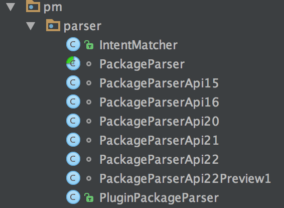
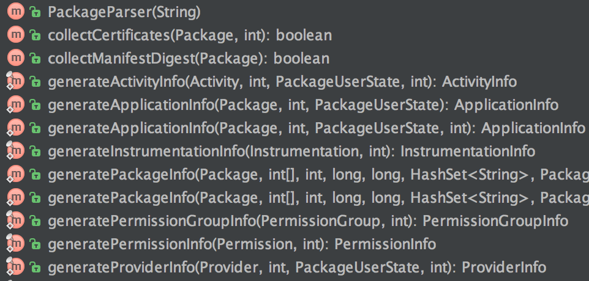

Android 插件化原理解析——插件加载机制
上文 Activity生命周期管理 中我们地完成了『启动没有在AndroidManifest.xml中显式声明的Activity』的任务；通过Hook AMS和拦截ActivityThread中H类对于组件调度我们成功地绕过了AndroidMAnifest.xml的限制。
但是我们启动的『没有在AndroidManifet.xml中显式声明』的Activity和宿主程序存在于同一个Apk中；通常情况下，插件均以独立的文件存在甚至通过网络获取，这时候插件中的Activity能否成功启动呢？
要启动Activity组件肯定先要创建对应的Activity类的对象，从上文 Activity生命周期管理 知道，创建Activity类对象的过程如下：
java.lang.ClassLoader cl = r.packageInfo.getClassLoader();
activity = mInstrumentation.newActivity(
cl, component.getClassName(), r.intent);
StrictMode.incrementExpectedActivityCount(activity.getClass());
r.intent.setExtrasClassLoader(cl);
也就是说，系统通过ClassLoader加载了需要的Activity类并通过反射调用构造函数创建出了Activity对象。如果Activity组件存在于独立于宿主程序的文件之中，系统的ClassLoader怎么知道去哪里加载呢？因此，如果不做额外的处理，插件中的Activity对象甚至都没有办法创建出来，谈何启动？
因此，要使存在于独立文件或者网络中的插件被成功启动，首先就需要解决这个插件类加载的问题。
下文将围绕此问题展开，完成『启动没有在AndroidManifest.xml中显示声明，并且存在于外部插件中的Activity』的任务。
阅读本文之前，可以先clone一份 understand-plugin-framework，参考此项目的classloader-hook 模块。另外，插件框架原理解析系列文章见索引。
ClassLoader机制
或许有的童鞋还不太了解Java的ClassLoader机制，我这里简要介绍一下。
Java虚拟机把描述类的数据从Class文件加载到内存，并对数据进行校检、转换解析和初始化的，最终形成可以被虚拟机直接使用的Java类型，这就是虚拟机的类加载机制。
与那些在编译时进行链连接工作的语言不同，在Java语言里面，类型的加载、连接和初始化都是在程序运行期间完成的，这种策略虽然会令类加载时稍微增加一些性能开销，但是会为Java应用程序提供高度的灵活性，Java里天生可以同代拓展的语言特性就是依赖运行期动态加载和动态链接这个特点实现的。例如，如果编写一个面相接口的应用程序，可以等到运行时在制定实际的实现类；用户可以通过Java与定义的和自定义的类加载器，让一个本地的应用程序可以在运行时从网络或其他地方加载一个二进制流作为代码的一部分，这种组装应用程序的方式目前已经广泛应用于Java程序之中。从最基础的Applet，JSP到复杂的OSGi技术，都使用了Java语言运行期类加载的特性。
Java的类加载是一个相对复杂的过程；它包括加载、验证、准备、解析和初始化五个阶段；对于开发者来说，可控性最强的是加载阶段；加载阶段主要完成三件事：
- 根据一个类的全限定名来获取定义此类的二进制字节流
- 将这个字节流所代表的静态存储结构转化为JVM方法区中的运行时数据结构
- 在内存中生成一个代表这个类的java.lang.Class对象，作为方法区这个类的各种数据的访问入口。 『通过一个类的全限定名获取描述此类的二进制字节流』这个过程被抽象出来，就是Java的类加载器模块，也即JDK中ClassLoader API。
Android Framework提供了DexClassLoader这个类，简化了『通过一个类的全限定名获取描述次类的二进制字节流』这个过程；我们只需要告诉DexClassLoader一个dex文件或者apk文件的路径就能完成类的加载。因此本文的内容用一句话就可以概括：
将插件的dex或者apk文件告诉『合适的』DexClassLoader，借助它完成插件类的加载
关于CLassLoader机制更多的内容，请参阅『深入理解Java虚拟机』这本书。
思路分析
Android系统使用了ClassLoader机制来进行Activity等组件的加载；apk被安装之后，APK文件的代码以及资源会被系统存放在固定的目录（比如/data/app/package_name/base-1.apk )系统在进行类加载的时候，会自动去这一个或者几个特定的路径来寻找这个类；但是系统并不知道存在于插件中的Activity组件的信息(插件可以是任意位置，甚至是网络，系统无法提前预知)，因此正常情况下系统无法加载我们插件中的类；因此也没有办法创建Activity的对象，更不用谈启动组件了。
解决这个问题有两个思路，要么全盘接管这个类加载的过程；要么告知系统我们使用的插件存在于哪里，让系统帮忙加载；这两种方式或多或少都需要干预这个类加载的过程。老规矩，知己知彼，百战不殆。我们首先分析一下，系统是如果完成这个类加载过程的。
我们再次搬出Activity的创建过程的代码：
java.lang.ClassLoader cl = r.packageInfo.getClassLoader();
activity = mInstrumentation.newActivity(cl, component.getClassName(), r.intent);
StrictMode.incrementExpectedActivityCount(activity.getClass());
r.intent.setExtrasClassLoader(cl);
这里可以很明显地看到，系统通过待启动的Activity的类名className，然后使用ClassLoader对象cl把这个类加载进虚拟机，最后使用反射创建了这个Activity类的实例对象。要想干预这个ClassLoader（告知它我们的路径或者替换他），我们首先得看看这玩意到底是个什么来头。（从哪里创建的）
cl这个ClasssLoader对象通过r.packageInfo对象的getClassLoader()方法得到，r.packageInfo是一个LoadedApk类的对象；那么，LoadedApk到底是个什么东西？？
我们查阅LoadedApk类的文档，只有一句话，不过说的很明白：
Local state maintained about a currently loaded .apk.
LoadedApk对象是APK文件在内存中的表示。 Apk文件的相关信息，诸如Apk文件的代码和资源，甚至代码里面的Activity，Service等组件的信息我们都可以通过此对象获取。
OK, 我们知道这个LoadedApk是何方神圣了；接下来我们要搞清楚的是：这个 r.packageInfo 到底是从哪里获取的？
我们顺着performLaunchActivity上溯，辗转handleLaunchActivity回到了 H 类的LAUNCH_ACTIVITY消息，找到了r.packageInfo的来源：
final ActivityClientRecord r = (ActivityClientRecord) msg.obj;
r.packageInfo = getPackageInfoNoCheck(
r.activityInfo.applicationInfo, r.compatInfo);
handleLaunchActivity(r, null);
getPackageInfoNoCheck方法很简单，直接调用了getPackageInfo方法：
public final LoadedApk getPackageInfoNoCheck(ApplicationInfo ai,
CompatibilityInfo compatInfo) {
return getPackageInfo(ai, compatInfo, null, false, true, false);
}
在这个getPackageInfo方法里面我们发现了端倪：
private LoadedApk getPackageInfo(ApplicationInfo aInfo, CompatibilityInfo compatInfo,
ClassLoader baseLoader, boolean securityViolation, boolean includeCode,
boolean registerPackage) {
// 获取userid信息
final boolean differentUser = (UserHandle.myUserId() != UserHandle.getUserId(aInfo.uid));
synchronized (mResourcesManager) {
// 尝试获取缓存信息
WeakReference<LoadedApk> ref;
if (differentUser) {
// Caching not supported across users
ref = null;
} else if (includeCode) {
ref = mPackages.get(aInfo.packageName);
} else {
ref = mResourcePackages.get(aInfo.packageName);
}
LoadedApk packageInfo = ref != null ? ref.get() : null;
if (packageInfo == null || (packageInfo.mResources != null
&& !packageInfo.mResources.getAssets().isUpToDate())) {
// 缓存没有命中，直接new
packageInfo =
new LoadedApk(this, aInfo, compatInfo, baseLoader,
securityViolation, includeCode &&
(aInfo.flags&ApplicationInfo.FLAG_HAS_CODE) != 0, registerPackage);
// 省略。。更新缓存
return packageInfo;
}
}
这个方法很重要，我们必须弄清楚每一步；
首先，它判断了调用方和或许App信息的一方是不是同一个userId；如果是同一个user，那么可以共享缓存数据（要么缓存的代码数据，要么缓存的资源数据）
接下来尝试获取缓存数据；如果没有命中缓存数据，才通过LoadedApk的构造函数创建了LoadedApk对象；创建成功之后，如果是同一个uid还放入了缓存。
提到缓存数据，看过Hook机制之Binder Hook的童鞋可能就知道了，我们之前成功借助ServiceManager的本地代理使用缓存的机制Hook了各种Binder；因此这里完全可以如法炮制——我们拿到这一份缓存数据，修改里面的ClassLoader；自己控制类加载的过程，这样加载插件中的Activity类的问题就解决了。这就引出了我们加载插件类的第一种方案：
激进方案：Hook掉ClassLoader，自己操刀
从上述分析中我们得知，在获取LoadedApk的过程中使用了一份缓存数据；这个缓存数据是一个Map，从包名到LoadedApk的一个映射。正常情况下，我们的插件肯定不会存在于这个对象里面；但是如果我们手动把我们插件的信息添加到里面呢？系统在查找缓存的过程中，会直接命中缓存！进而使用我们添加进去的LoadedApk的ClassLoader来加载这个特定的Activity类！这样我们就能接管我们自己插件类的加载过程了！
这个缓存对象mPackages存在于ActivityThread类中；老方法，我们首先获取这个对象：
// 先获取到当前的ActivityThread对象
Class<?> activityThreadClass = Class.forName("android.app.ActivityThread");
Method currentActivityThreadMethod = activityThreadClass.getDeclaredMethod("currentActivityThread");
currentActivityThreadMethod.setAccessible(true);
Object currentActivityThread = currentActivityThreadMethod.invoke(null);
// 获取到 mPackages 这个静态成员变量, 这里缓存了dex包的信息
Field mPackagesField = activityThreadClass.getDeclaredField("mPackages");
mPackagesField.setAccessible(true);
Map mPackages = (Map) mPackagesField.get(currentActivityThread);
拿到这个Map之后接下来怎么办呢？我们需要填充这个map，把插件的信息塞进这个map里面，以便系统在查找的时候能命中缓存。但是这个填充这个Map我们出了需要包名之外，还需要一个LoadedApk对象；如何创建一个LoadedApk对象呢？
我们当然可以直接反射调用它的构造函数直接创建出需要的对象，但是万一哪里有疏漏，构造参数填错了怎么办？又或者Android的不同版本使用了不同的参数，导致我们创建出来的对象与系统创建出的对象不一致，无法work怎么办？
因此我们需要使用与系统完全相同的方式创建LoadedApk对象；从上文分析得知，系统创建LoadedApk对象是通过getPackageInfo来完成的，因此我们可以调用这个函数来创建LoadedApk对象；但是这个函数是private的，我们无法使用。
有的童鞋可能会有疑问了，private不是也能反射到吗？我们确实能够调用这个函数，但是private表明这个函数是内部实现，或许那一天Google高兴，把这个函数改个名字我们就直接GG了；但是public函数不同，public被导出的函数你无法保证是否有别人调用它，因此大部分情况下不会修改；我们最好调用public函数来保证尽可能少的遇到兼容性问题。（当然，如果实在木有路可以考虑调用私有方法，自己处理兼容性问题，这个我们以后也会遇到）
间接调用getPackageInfo这个私有函数的public函数有同名的getPackageInfo系列和getPackageInfoNoCheck；简单查看源代码发现，getPackageInfo除了获取包的信息，还检查了包的一些组件；为了绕过这些验证，我们选择使用getPackageInfoNoCheck获取LoadedApk信息。
构建插件LoadedApk对象
我们这一步的目的很明确，通过getPackageInfoNoCheck函数创建出我们需要的LoadedApk对象，以供接下来使用。
这个函数的签名如下：
public final LoadedApk getPackageInfoNoCheck(ApplicationInfo ai,
CompatibilityInfo compatInfo) {
因此，为了调用这个函数，我们需要构造两个参数。其一是ApplicationInfo，其二是CompatibilityInfo；第二个参数顾名思义，代表这个App的兼容性信息，比如targetSDK版本等等，这里我们只需要提取出app的信息，因此直接使用默认的兼容性即可；在CompatibilityInfo类里面有一个公有字段DEFAULT_COMPATIBILITY_INFO代表默认兼容性信息；因此，我们的首要目标是获取这个ApplicationInfo信息。
构建插件ApplicationInfo信息
我们首先看看ApplicationInfo代表什么，这个类的文档说的很清楚：
Information you can retrieve about a particular application. This corresponds to information collected from the AndroidManifest.xml’s
tag.
也就是说，这个类就是AndroidManifest.xml里面的 这个标签下面的信息；这个AndroidManifest.xml无疑是一个标准的xml文件，因此我们完全可以自己使用parse来解析这个信息。
那么，系统是如何获取这个信息的呢？其实Framework就有一个这样的parser，也即PackageParser；理论上，我们也可以借用系统的parser来解析AndroidMAnifest.xml从而得到ApplicationInfo的信息。但遗憾的是，这个类的兼容性很差；Google几乎在每一个Android版本都对这个类动刀子，如果坚持使用系统的解析方式，必须写一系列兼容行代码！！DroidPlugin就选择了这种方式，相关类如下：

看到这里我就问你怕不怕！！！这也是我们之前提到的私有或者隐藏的API可以使用，但必须处理好兼容性问题；如果Android 7.0发布，这里估计得添加一个新的类PackageParseApi24。
我这里使用API 23作为演示，版本不同的可能无法运行请自行查阅 DroidPlugin 不同版本如何处理。
OK回到正题，我们决定使用PackageParser类来提取ApplicationInfo信息。下图是API 23上，PackageParser的部分类结构图：

看起来有我们需要的方法 generateApplication；确实如此，依靠这个方法我们可以成功地拿到ApplicationInfo。
由于PackageParser是@hide的，因此我们需要通过反射进行调用。我们根据这个generateApplicationInfo方法的签名：
public static ApplicationInfo generateApplicationInfo(Package p, int flags,
PackageUserState state)
可以写出调用generateApplicationInfo的反射代码：
Class<?> packageParserClass = Class.forName("android.content.pm.PackageParser");
// 首先拿到我们得终极目标: generateApplicationInfo方法
// API 23 !!!!!!!!!!!!!!!!!!!!!!!!!!!!!!!!!!!!!!!!!!!!!!!!!!!!!!!!!!!!!!!!!!!!
// public static ApplicationInfo generateApplicationInfo(Package p, int flags,
// PackageUserState state) {
// 其他Android版本不保证也是如此.
Class<?> packageParser$PackageClass = Class.forName("android.content.pm.PackageParser$Package");
Class<?> packageUserStateClass = Class.forName("android.content.pm.PackageUserState");
Method generateApplicationInfoMethod = packageParserClass.getDeclaredMethod("generateApplicationInfo",
packageParser$PackageClass,
int.class,
packageUserStateClass);
要成功调用这个方法，还需要三个参数；因此接下来我们需要一步一步构建调用此函数的参数信息。
构建PackageParser.Package
generateApplicationInfo方法需要的第一个参数是PackageParser.Package；从名字上看这个类代表某个apk包的信息，我们看看文档怎么解释：
Representation of a full package parsed from APK files on disk. A package consists of a single base APK, and zero or more split APKs.
果然，这个类代表从PackageParser中解析得到的某个apk包的信息，是磁盘上apk文件在内存中的数据结构表示；因此，要获取这个类，肯定需要解析整个apk文件。PackageParser中解析apk的核心方法是parsePackage，这个方法返回的就是一个Package类型的实例，因此我们调用这个方法即可；使用反射代码如下：
// 首先, 我们得创建出一个Package对象出来供这个方法调用
// 而这个需要得对象可以通过 android.content.pm.PackageParser#parsePackage 这个方法返回得 Package对象得字段获取得到
// 创建出一个PackageParser对象供使用
Object packageParser = packageParserClass.newInstance();
// 调用 PackageParser.parsePackage 解析apk的信息
Method parsePackageMethod = packageParserClass.getDeclaredMethod("parsePackage", File.class, int.class);
// 实际上是一个 android.content.pm.PackageParser.Package 对象
Object packageObj = parsePackageMethod.invoke(packageParser, apkFile, 0);
这样，我们就得到了generateApplicationInfo的第一个参数；第二个参数是解析包使用的flag，我们直接选择解析全部信息，也就是0；
构建PackageUserState
第三个参数是PackageUserState，代表不同用户中包的信息。由于Android是一个多任务多用户系统，因此不同的用户同一个包可能有不同的状态；这里我们只需要获取包的信息，因此直接使用默认的即可；
至此，generateApplicaionInfo的参数我们已经全部构造完成，直接调用此方法即可得到我们需要的applicationInfo对象；在返回之前我们需要做一点小小的修改：使用系统系统的这个方法解析得到的ApplicationInfo对象中并没有apk文件本身的信息，所以我们把解析的apk文件的路径设置一下（ClassLoader依赖dex文件以及apk的路径）：
// 第三个参数 mDefaultPackageUserState 我们直接使用默认构造函数构造一个出来即可
Object defaultPackageUserState = packageUserStateClass.newInstance();
// 万事具备!!!!!!!!!!!!!!
ApplicationInfo applicationInfo = (ApplicationInfo) generateApplicationInfoMethod.invoke(packageParser,
packageObj, 0, defaultPackageUserState);
String apkPath = apkFile.getPath();
applicationInfo.sourceDir = apkPath;
applicationInfo.publicSourceDir = apkPath;
替换ClassLoader
获取LoadedApk信息
方才为了获取ApplicationInfo我们费了好大一番精力；回顾一下我们的初衷：
我们最终的目的是调用getPackageInfoNoCheck得到LoadedApk的信息，并替换其中的mClassLoader然后把把添加到ActivityThread的mPackages缓存中；从而达到我们使用自己的ClassLoader加载插件中的类的目的。
现在我们已经拿到了getPackageInfoNoCheck这个方法中至关重要的第一个参数applicationInfo；上文提到第二个参数CompatibilityInfo代表设备兼容性信息，直接使用默认的值即可；因此，两个参数都已经构造出来，我们可以调用getPackageInfoNoCheck获取LoadedApk：
// android.content.res.CompatibilityInfo
Class<?> compatibilityInfoClass = Class.forName("android.content.res.CompatibilityInfo");
Method getPackageInfoNoCheckMethod = activityThreadClass.getDeclaredMethod("getPackageInfoNoCheck", ApplicationInfo.class, compatibilityInfoClass);
Field defaultCompatibilityInfoField = compatibilityInfoClass.getDeclaredField("DEFAULT_COMPATIBILITY_INFO");
defaultCompatibilityInfoField.setAccessible(true);
Object defaultCompatibilityInfo = defaultCompatibilityInfoField.get(null);
ApplicationInfo applicationInfo = generateApplicationInfo(apkFile);
Object loadedApk = getPackageInfoNoCheckMethod.invoke(currentActivityThread, applicationInfo, defaultCompatibilityInfo);
我们成功地构造出了LoadedAPK, 接下来我们需要替换其中的ClassLoader，然后把它添加进ActivityThread的mPackages中：
String odexPath = Utils.getPluginOptDexDir(applicationInfo.packageName).getPath();
String libDir = Utils.getPluginLibDir(applicationInfo.packageName).getPath();
ClassLoader classLoader = new CustomClassLoader(apkFile.getPath(), odexPath, libDir, ClassLoader.getSystemClassLoader());
Field mClassLoaderField = loadedApk.getClass().getDeclaredField("mClassLoader");
mClassLoaderField.setAccessible(true);
mClassLoaderField.set(loadedApk, classLoader);
// 由于是弱引用, 因此我们必须在某个地方存一份, 不然容易被GC; 那么就前功尽弃了.
sLoadedApk.put(applicationInfo.packageName, loadedApk);
WeakReference weakReference = new WeakReference(loadedApk);
mPackages.put(applicationInfo.packageName, weakReference);
我们的这个CustomClassLoader非常简单，直接继承了DexClassLoader，什么都没有做；当然这里可以直接使用DexClassLoader，这里重新创建一个类是为了更有区分度；以后也可以通过修改这个类实现对于类加载的控制：
public class CustomClassLoader extends DexClassLoader {
public CustomClassLoader(String dexPath, String optimizedDirectory, String libraryPath, ClassLoader parent) {
super(dexPath, optimizedDirectory, libraryPath, parent);
}
}
到这里，我们已经成功地把把插件的信息放入ActivityThread中，这样我们插件中的类能够成功地被加载；因此插件中的Activity实例能被成功第创建；由于整个流程较为复杂，我们简单梳理一下：
在ActivityThread接收到IApplication的 scheduleLaunchActivity远程调用之后，将消息转发给H H类在handleMessage的时候，调用了getPackageInfoNoCheck方法来获取待启动的组件信息。在这个方法中会优先查找mPackages中的缓存信息，而我们已经手动把插件信息添加进去；因此能够成功命中缓存，获取到独立存在的插件信息。 H类然后调用handleLaunchActivity最终转发到performLaunchActivity方法；这个方法使用从getPackageInfoNoCheck中拿到LoadedApk中的mClassLoader来加载Activity类，进而使用反射创建Activity实例；接着创建Application，Context等完成Activity组件的启动。 看起来好像已经天衣无缝万事大吉了；但是运行一下会出现一个异常，如下：
04-05 02:49:53.742 11759-11759/com.weishu.upf.hook_classloader E/AndroidRuntime﹕ FATAL EXCEPTION: main Process: com.weishu.upf.hook_classloader, PID: 11759 java.lang.RuntimeException: Unable to start activity ComponentInfo{com.weishu.upf.ams_pms_hook.app/com.weishu.upf.ams_pms_hook.app.MainActivity}: java.lang.RuntimeException: Unable to instantiate application android.app.Application: java.lang.IllegalStateException: Unable to get package info for com.weishu.upf.ams_pms_hook.app; is package not installed?
错误提示说是无法实例化 Application，而Application的创建也是在performLaunchActivity中进行的，这里有些蹊跷，我们仔细查看一下。
绕过系统检查
通过ActivityThread的performLaunchActivity方法可以得知，Application通过LoadedApk的makeApplication方法创建，我们查看这个方法，在源码中发现了上文异常抛出的位置：
try {
java.lang.ClassLoader cl = getClassLoader();
if (!mPackageName.equals("android")) {
initializeJavaContextClassLoader();
}
ContextImpl appContext = ContextImpl.createAppContext(mActivityThread, this);
app = mActivityThread.mInstrumentation.newApplication(
cl, appClass, appContext);
appContext.setOuterContext(app);
} catch (Exception e) {
if (!mActivityThread.mInstrumentation.onException(app, e)) {
throw new RuntimeException(
"Unable to instantiate application " + appClass
+ ": " + e.toString(), e);
}
}
木有办法，我们只有一行一行地查看到底是哪里抛出这个异常的了；所幸代码不多。（所以说，缩小异常范围是一件多么重要的事情！！！）
第一句 getClassLoader() 没什么可疑的，虽然方法很长，但是它木有抛出任何异常（当然，它调用的代码可能抛出异常，万一找不到只能进一步深搜了；所以我觉得这里应该使用受检异常）。
然后我们看第二句，如果包名不是android开头，那么调用了一个叫做initializeJavaContextClassLoader的方法；我们查阅这个方法：
private void initializeJavaContextClassLoader() {
IPackageManager pm = ActivityThread.getPackageManager();
android.content.pm.PackageInfo pi;
try {
pi = pm.getPackageInfo(mPackageName, 0, UserHandle.myUserId());
} catch (RemoteException e) {
throw new IllegalStateException("Unable to get package info for "
+ mPackageName + "; is system dying?", e);
}
if (pi == null) {
throw new IllegalStateException("Unable to get package info for "
+ mPackageName + "; is package not installed?");
}
boolean sharedUserIdSet = (pi.sharedUserId != null);
boolean processNameNotDefault =
(pi.applicationInfo != null &&
!mPackageName.equals(pi.applicationInfo.processName));
boolean sharable = (sharedUserIdSet || processNameNotDefault);
ClassLoader contextClassLoader =
(sharable)
? new WarningContextClassLoader()
: mClassLoader;
Thread.currentThread().setContextClassLoader(contextClassLoader);
}
这里，我们找出了这个异常的来源：原来这里调用了getPackageInfo方法获取包的信息；而我们的插件并没有安装在系统上，因此系统肯定认为插件没有安装，这个方法肯定返回null。所以，我们还要欺骗一下PMS，让系统觉得插件已经安装在系统上了；至于如何欺骗 PMS，Hook机制之AMS&PMS 有详细解释，这里直接给出代码，不赘述了：
private static void hookPackageManager() throws Exception {
// 这一步是因为 initializeJavaContextClassLoader 这个方法内部无意中检查了这个包是否在系统安装
// 如果没有安装, 直接抛出异常, 这里需要临时Hook掉 PMS, 绕过这个检查.
Class<?> activityThreadClass = Class.forName("android.app.ActivityThread");
Method currentActivityThreadMethod = activityThreadClass.getDeclaredMethod("currentActivityThread");
currentActivityThreadMethod.setAccessible(true);
Object currentActivityThread = currentActivityThreadMethod.invoke(null);
// 获取ActivityThread里面原始的 sPackageManager
Field sPackageManagerField = activityThreadClass.getDeclaredField("sPackageManager");
sPackageManagerField.setAccessible(true);
Object sPackageManager = sPackageManagerField.get(currentActivityThread);
// 准备好代理对象, 用来替换原始的对象
Class<?> iPackageManagerInterface = Class.forName("android.content.pm.IPackageManager");
Object proxy = Proxy.newProxyInstance(iPackageManagerInterface.getClassLoader(),
new Class<?>[] { iPackageManagerInterface },
new IPackageManagerHookHandler(sPackageManager));
// 1. 替换掉ActivityThread里面的 sPackageManager 字段
sPackageManagerField.set(currentActivityThread, proxy);
}
OK到这里，我们已经能够成功地加载简单的独立的存在于外部文件系统中的apk了。至此 关于 DroidPlugin 对于Activity生命周期的管理已经完全讲解完毕了；这是一种极其复杂的Activity管理方案，我们仅仅写一个用来理解的demo就Hook了相当多的东西，在Framework层来回牵扯；这其中的来龙去脉要完全把握清楚还请读者亲自翻阅源码。另外，我在此 对DroidPlugin 作者献上我的膝盖～这其中的玄妙让人叹为观止！
上文给出的方案中，我们全盘接管了插件中类的加载过程，这是一种相对暴力的解决方案；能不能更温柔一点呢？通俗来说，我们可以选择改革，而不是革命——告诉系统ClassLoader一些必要信息，让它帮忙完成插件类的加载。
保守方案：委托系统，让系统帮忙加载
我们再次搬出ActivityThread中加载Activity类的代码：
java.lang.ClassLoader cl = r.packageInfo.getClassLoader();
activity = mInstrumentation.newActivity(
cl, component.getClassName(), r.intent);
StrictMode.incrementExpectedActivityCount(activity.getClass());
r.intent.setExtrasClassLoader(cl);
我们知道 这个r.packageInfo中的r是通过getPackageInfoNoCheck获取到的；在『激进方案』中我们把插件apk手动添加进缓存，采用自己加载办法解决；如果我们不干预这个过程，导致无法命中mPackages中的缓存，会发生什么？
查阅 getPackageInfo方法如下：
private LoadedApk getPackageInfo(ApplicationInfo aInfo, CompatibilityInfo compatInfo,
ClassLoader baseLoader, boolean securityViolation, boolean includeCode,
boolean registerPackage) {
final boolean differentUser = (UserHandle.myUserId() != UserHandle.getUserId(aInfo.uid));
synchronized (mResourcesManager) {
WeakReference<LoadedApk> ref;
if (differentUser) {
// Caching not supported across users
ref = null;
} else if (includeCode) {
ref = mPackages.get(aInfo.packageName);
} else {
ref = mResourcePackages.get(aInfo.packageName);
}
LoadedApk packageInfo = ref != null ? ref.get() : null;
if (packageInfo == null || (packageInfo.mResources != null
&& !packageInfo.mResources.getAssets().isUpToDate())) {
packageInfo =
new LoadedApk(this, aInfo, compatInfo, baseLoader,
securityViolation, includeCode &&
(aInfo.flags&ApplicationInfo.FLAG_HAS_CODE) != 0, registerPackage);
// 略
}
}
可以看到，没有命中缓存的情况下，系统直接new了一个LoadedApk；注意这个构造函数的第二个参数aInfo，这是一个ApplicationInfo类型的对象。在『激进方案』中我们为了获取独立插件的ApplicationInfo花了不少心思；那么如果不做任何处理这里传入的这个aInfo参数是什么？
追本溯源不难发现，这个aInfo是从我们的替身StubActivity中获取的！而StubActivity存在于宿主程序中，所以，这个aInfo对象代表的实际上就是宿主程序的Application信息！
我们知道，接下来会使用new出来的这个LoadedApk的getClassLoader()方法获取到ClassLoader来对插件的类进行加载；而获取到的这个ClassLoader是宿主程序使用的ClassLoader，因此现在还无法加载插件的类；那么，我们能不能让宿主的ClassLoader获得加载插件类的能力呢？；如果我们告诉宿主使用的ClassLoader插件使用的类在哪里，就能帮助他完成加载！
宿主的ClassLoader在哪里，是唯一的吗？
上面说到，我们可以通过告诉宿主程序的ClassLoader插件使用的类，让宿主的ClasLoader完成对于插件类的加载；那么问题来了，我们如何获取到宿主的ClassLoader？宿主程序使用的ClasLoader默认情况下是全局唯一的吗？
答案是肯定的。
因为在FrameWork中宿主程序也是使用LoadedApk表示的，如同Activity启动是加载Activity类一样，宿主中的类也都是通过LoadedApk的getClassLoader()方法得到的ClassLoader加载的；由类加载机制的『双亲委派』特性，只要有一个应用程序类由某一个ClassLoader加载，那么它引用到的别的类除非父加载器能加载，否则都是由这同一个加载器加载的（不遵循双亲委派模型的除外）。
表示宿主的LoadedApk在Application类中有一个成员变量mLoadedApk，而这个变量是从ContextImpl中获取的；ContextImpl重写了getClassLoader方法，因此我们在Context环境中直接getClassLoader()获取到的就是宿主程序唯一的ClassLoader。
LoadedApk的ClassLoader到底是什么？
现在我们确保了『使用宿主ClassLoader帮助加载插件类』可行性；那么我们应该如何完成这个过程呢？
知己知彼，百战不殆。
不论是宿主程序还是插件程序都是通过LoadedApk的getClassLoader()方法返回的ClassLoader进行类加载的，返回的这个ClassLoader到底是个什么东西？？这个方法源码如下：
public ClassLoader getClassLoader() {
synchronized (this) {
if (mClassLoader != null) {
return mClassLoader;
}
if (mIncludeCode && !mPackageName.equals("android")) {
// 略...
mClassLoader = ApplicationLoaders.getDefault().getClassLoader(zip, lib,
mBaseClassLoader);
StrictMode.setThreadPolicy(oldPolicy);
} else {
if (mBaseClassLoader == null) {
mClassLoader = ClassLoader.getSystemClassLoader();
} else {
mClassLoader = mBaseClassLoader;
}
}
return mClassLoader;
}
}
可以看到，非android开头的包和android开头的包分别使用了两种不同的ClassLoader，我们只关心第一种；因此继续跟踪ApplicationLoaders类：
public ClassLoader getClassLoader(String zip, String libPath, ClassLoader parent)
{
ClassLoader baseParent = ClassLoader.getSystemClassLoader().getParent();
synchronized (mLoaders) {
if (parent == null) {
parent = baseParent;
}
if (parent == baseParent) {
ClassLoader loader = mLoaders.get(zip);
if (loader != null) {
return loader;
}
Trace.traceBegin(Trace.TRACE_TAG_ACTIVITY_MANAGER, zip);
PathClassLoader pathClassloader =
new PathClassLoader(zip, libPath, parent);
Trace.traceEnd(Trace.TRACE_TAG_ACTIVITY_MANAGER);
mLoaders.put(zip, pathClassloader);
return pathClassloader;
}
Trace.traceBegin(Trace.TRACE_TAG_ACTIVITY_MANAGER, zip);
PathClassLoader pathClassloader = new PathClassLoader(zip, parent);
Trace.traceEnd(Trace.TRACE_TAG_ACTIVITY_MANAGER);
return pathClassloader;
}
}
可以看到，应用程序使用的ClassLoader都是PathClassLoader类的实例。那么，这个PathClassLoader是什么呢？从Android SDK给出的源码只能看出这么多：
public class PathClassLoader extends BaseDexClassLoader {
public PathClassLoader(String dexPath, ClassLoader parent) {
super((String)null, (File)null, (String)null, (ClassLoader)null);
throw new RuntimeException("Stub!");
}
public PathClassLoader(String dexPath, String libraryPath, ClassLoader parent) {
super((String)null, (File)null, (String)null, (ClassLoader)null);
throw new RuntimeException("Stub!");
}
}
SDK没有导出这个类的源码，我们去androidxref上面看；发现其实这个类真的就这么多内容；我们继续查看它的父类BaseDexClassLoader；ClassLoader嘛，我们查看findClass或者defineClass方法，BaseDexClassLoader的findClass方法如下：
protected Class<?> findClass(String name) throws ClassNotFoundException {
List<Throwable> suppressedExceptions = new ArrayList<Throwable>();
Class c = pathList.findClass(name, suppressedExceptions);
if (c == null) {
ClassNotFoundException cnfe = new ClassNotFoundException("Didn't find class \"" + name + "\" on path: " + pathList);
for (Throwable t : suppressedExceptions) {
cnfe.addSuppressed(t);
}
throw cnfe;
}
return c;
}
可以看到，查找Class的任务通过pathList完成；这个pathList是一个DexPathList类的对象，它的findClass方法如下：
public Class findClass(String name, List<Throwable> suppressed) {
for (Element element : dexElements) {
DexFile dex = element.dexFile;
if (dex != null) {
Class clazz = dex.loadClassBinaryName(name, definingContext, suppressed);
if (clazz != null) {
return clazz;
}
}
}
if (dexElementsSuppressedExceptions != null) {
suppressed.addAll(Arrays.asList(dexElementsSuppressedExceptions));
}
return null;
}
这个DexPathList内部有一个叫做dexElements的数组，然后findClass的时候会遍历这个数组来查找Class；如果我们把插件的信息塞进这个数组里面，那么不就能够完成类的加载过程吗？！！
给默认ClassLoader打补丁
通过上述分析，我们知道，可以把插件的相关信息放入BaseDexClassLoader的表示dex文件的数组里面，这样宿主程序的ClassLoader在进行类加载，遍历这个数组的时候，会自动遍历到我们添加进去的插件信息，从而完成插件类的加载！
接下来，我们实现这个过程；我们会用到一些较为复杂的反射技术哦～不过代码非常短：
public static void patchClassLoader(ClassLoader cl, File apkFile, File optDexFile)
throws IllegalAccessException, NoSuchMethodException, IOException, InvocationTargetException, InstantiationException, NoSuchFieldException {
// 获取 BaseDexClassLoader : pathList
Field pathListField = DexClassLoader.class.getSuperclass().getDeclaredField("pathList");
pathListField.setAccessible(true);
Object pathListObj = pathListField.get(cl);
// 获取 PathList: Element[] dexElements
Field dexElementArray = pathListObj.getClass().getDeclaredField("dexElements");
dexElementArray.setAccessible(true);
Object[] dexElements = (Object[]) dexElementArray.get(pathListObj);
// Element 类型
Class<?> elementClass = dexElements.getClass().getComponentType();
// 创建一个数组, 用来替换原始的数组
Object[] newElements = (Object[]) Array.newInstance(elementClass, dexElements.length + 1);
// 构造插件Element(File file, boolean isDirectory, File zip, DexFile dexFile) 这个构造函数
Constructor<?> constructor = elementClass.getConstructor(File.class, boolean.class, File.class, DexFile.class);
Object o = constructor.newInstance(apkFile, false, apkFile, DexFile.loadDex(apkFile.getCanonicalPath(), optDexFile.getAbsolutePath(), 0));
Object[] toAddElementArray = new Object[] { o };
// 把原始的elements复制进去
System.arraycopy(dexElements, 0, newElements, 0, dexElements.length);
// 插件的那个element复制进去
System.arraycopy(toAddElementArray, 0, newElements, dexElements.length, toAddElementArray.length);
// 替换
dexElementArray.set(pathListObj, newElements);
}
短短的二十几行代码，我们就完成了『委托宿主ClassLoader加载插件类』的任务；因此第二种方案也宣告完成！我们简要总结一下这种方式的原理：
- 默认情况下performLacunchActivity会使用替身StubActivity的ApplicationInfo也就是宿主程序的CLassLoader加载所有的类；我们的思路是告诉宿主ClassLoader我们在哪，让其帮助完成类加载的过程。
- 宿主程序的ClassLoader最终继承自BaseDexClassLoader，BaseDexClassLoader通过DexPathList进行类的查找过程；而这个查找通过遍历一个dexElements的数组完成；我们通过把插件dex添加进这个数组就让宿主ClasLoader获取了加载插件类的能力。
小结
本文中我们采用两种方案成功完成了『启动没有在AndroidManifest.xml中显示声明，并且存在于外部插件中的Activity』的任务。
『激进方案』中我们自定义了插件的ClassLoader，并且绕开了Framework的检测；利用ActivityThread对于LoadedApk的缓存机制，我们把携带这个自定义的ClassLoader的插件信息添加进mPackages中，进而完成了类的加载过程。
『保守方案』中我们深入探究了系统使用ClassLoader findClass的过程，发现应用程序使用的非系统类都是通过同一个PathClassLoader加载的；而这个类的最终父类BaseDexClassLoader通过DexPathList完成类的查找过程；我们hack了这个查找过程，从而完成了插件类的加载。
这两种方案孰优孰劣呢？
很显然，『激进方案』比较麻烦，从代码量和分析过程就可以看出来，这种机制异常复杂；而且在解析apk的时候我们使用的PackageParser的兼容性非常差，我们不得不手动处理每一个版本的apk解析api；另外，它Hook的地方也有点多：不仅需要Hook AMS和H，还需要Hook ActivityThread的mPackages和PackageManager！
『保守方案』则简单得多（虽然原理也不简单），不仅代码很少，而且Hook的地方也不多；有一点正本清源的意思，从最最上层Hook住了整个类的加载过程。
但是，我们不能简单地说『保守方案』比『激进方案』好。从根本上说，这两种方案的差异在哪呢？
『激进方案』是多ClassLoader构架，每一个插件都有一个自己的ClassLoader，因此类的隔离性非常好——如果不同的插件使用了同一个库的不同版本，它们相安无事！『保守方案』是单ClassLoader方案，插件和宿主程序的类全部都通过宿主的ClasLoader加载，虽然代码简单，但是鲁棒性很差；一旦插件之间甚至插件与宿主之间使用的类库有冲突，那么直接GG。
多ClassLoader还有一个优点：可以真正完成代码的热加载！如果插件需要升级，直接重新创建一个自定的ClassLoader加载新的插件，然后替换掉原来的版本即可（Java中，不同ClassLoader加载的同一个类被认为是不同的类）；单ClassLoader的话实现非常麻烦，有可能需要重启进程。
在J2EE领域中广泛使用ClasLoader的地方均采用多ClassLoader架构，比如Tomcat服务器，Java模块化事实标准的OSGi技术；所以，我们有足够的理由认为选择多ClassLoader架构在大多数情况下是明智之举。
目前开源的插件方案中，DroidPlugin采用的『激进方案』，Small采用的『保守方案』那么，有没有两种优点兼顾的方案呢？？
答案自然是有的。
DroidPlugin和Small的共同点是两者都是非侵入式的插件框架；什么是『非侵入式』呢？打个比方，你启动一个插件Activity，直接使用startActivity即可，就跟开发普通的apk一样，开发插件和普通的程序对于开发者来说没有什么区别。
如果我们一定程度上放弃这种『侵入性』，那么我们就能实现一个两者优点兼而有之的插件框架！这里我先卖个关子～
OK，本文的内容就到这里了；关于『插件机制对于Activity的处理方式』也就此完结。要说明的是，在本文的『保守方案』其实只处理了代码的加载过程，它并不能加载有资源的apk！所以目前我这个实现基本没什么暖用；当然我这里只是就『代码加载』进行举例；至于资源，那牵扯到另外一个问题——插件系统的资源管理机制这个在后续文章的合适机会我会单独讲解。
接下来的文章，会讲述Android四大组件的另外三个Service，BroadCastReceiver, ContentProvider的处理方式。喜欢就点个赞吧～持续更新，请关注github项目 understand-plugin-framework和我的 博客! 这文章我前前后后准备了快两个星期，如果你看到了这里，还请支持一下 :)